Tools that fit how your team already works
HRMS, attendance and payroll, project planning, dashboards and internal tools — built around your process instead of bending your process around someone else's product.
Internal software, properly engineered
The systems that run a company day to day — the ones off-the-shelf products almost fit, but never quite.

HRMS & workforce
Employee master, attendance capture, leave workflows, payroll runs and payslip generation — with an audit trail on every change.
Attendance → payroll →
Project planning & scheduling
Task breakdowns, dependencies, resource loading and timeline views that reflect how your projects actually run, not a generic template.
Gantt · kanban · load →
Dashboards & reporting
One place your managers can answer the recurring questions, instead of three people rebuilding the same spreadsheet every month.
Live, not emailed →
Workflow automation
The repetitive handoffs — approvals, reminders, month-end reports, data syncs — moved off someone's calendar and into the system.
Scheduled & logged →
Spreadsheet migration
That critical workbook only one person understands, turned into a multi-user application with validation, permissions and backups.
Excel → application →
Integration & APIs
Getting your biometric device, accounting package and internal tools to agree with each other — with clear contracts between them.
Connect what you own →Have a click around
Three views from the kind of tooling we build. Drag a card between columns, switch to the timeline, check the attendance board — it all runs right here in the page.
Built for the awkward middle
Most companies are too specific for a generic SaaS product and too small for an enterprise rollout. That gap is where we work.
We run our own HRMS on this stack — attendance, leave, payroll and payslips for a live team. We're not demoing something we've never had to support.
To do 3
In progress 2
Done 2
Drag a card between columns — the counts update live.
Orange marks a task tracking behind its baseline.
Working demo with sample data. Your build is shaped to your own roles, policies and approval chains.
Working software early, not a document
Shadow
We sit with the people who do the work today and map the real process — including the workarounds nobody has written down.
Pilot
One module, one team, real data. Usually about six weeks. If it doesn't earn its place, you've spent a pilot and not a year.
Roll out
Module by module with training as we go, so adoption happens gradually instead of via a single disruptive switchover.
Hand over
Source, deployment scripts, documentation and training. Keep us on support if it's useful — not because you have no alternative.
Boring technology, deliberately
Chosen so another engineer can pick it up in five years without an archaeology project.
R / Shiny
Fast to build data-heavy internal tools, and analytics live in the same runtime as the interface.
Python / APIs
Background jobs, integrations and scheduled work, with clear contracts between components.
PostgreSQL
One well-modelled database with real constraints — the difference between a tool and a spreadsheet with a login.
Docker / cloud
Reproducible deployment on your infrastructure or ours, with backups and restores that are actually tested.
The other three divisions
Book a walkthrough
Tell us which process is currently held together by a spreadsheet and a reminder in someone's calendar. We'll show you what replacing it looks like.